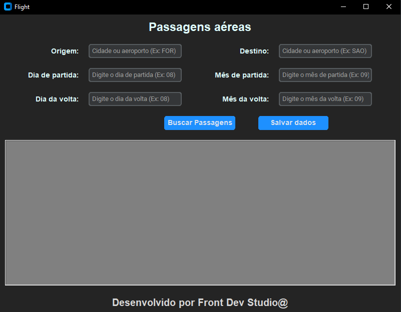
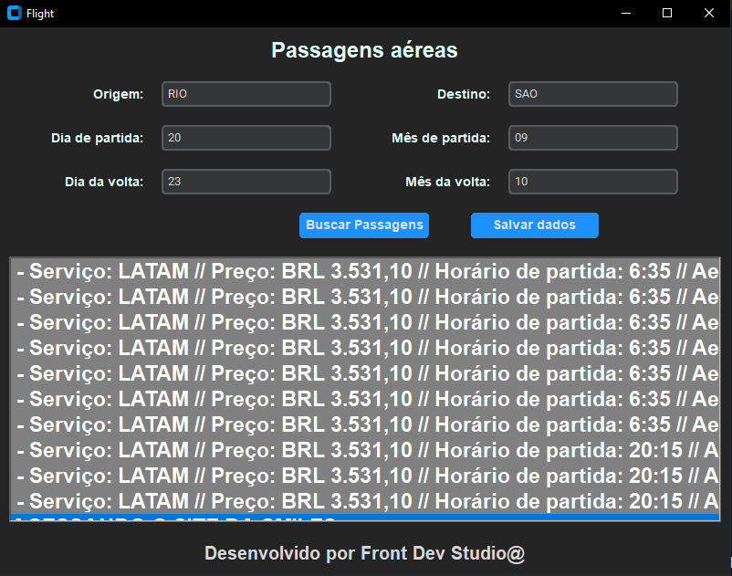

Descrição do Projeto
O Flight Finder é uma aplicação de desktop desenvolvida para ajudar você a encontrar e comparar passagens aéreas de diferentes sites de forma rápida e eficiente. Utilizando Python, Selenium e Tkinter, este projeto permite buscar passagens aéreas em três das principais plataformas: LATAM, KAYAK e SMILES.
Principais Funcionalidades
- Busca Avançada de Passagens: Consulte passagens aéreas de ida e volta entre duas cidades utilizando as ferramentas LATAM, KAYAK e SMILES.
- Interface Intuitiva: Interface gráfica amigável desenvolvida com Tkinter para facilitar a entrada de dados e visualização dos resultados.
- Dados Detalhados: Obtém informações completas sobre as passagens, incluindo preços, horários de partida e chegada, aeroportos, e número de paradas.
- Exportação de Dados: Salve os resultados da busca em uma planilha Excel para análise posterior.
Como Funciona
- Preencha os Campos de Pesquisa: Informe a origem, destino, data de partida e data de retorno.
- Inicie a Busca: Clique no botão "Buscar Passagens" para iniciar o processo de coleta de dados.
- Visualize os Resultados: Veja os detalhes das passagens diretamente na interface.
- Salve os Resultados: Exporte os dados coletados para uma planilha Excel com um clique.
Tecnologias Utilizadas
- Python: Linguagem principal utilizada para o desenvolvimento do projeto.
- Selenium: Biblioteca para automação de navegadores, usada para extrair dados de sites de passagens aéreas.
- Tkinter: Biblioteca para criar a interface gráfica do usuário.
- Pandas: Biblioteca para manipulação de dados e exportação para Excel.
Instruções de Uso
- Instale os Requisitos: Certifique-se de ter Python e as bibliotecas necessárias instaladas.
- Execute o Aplicativo: Rode o script principal para abrir a interface gráfica.
- Insira os Dados: Preencha as informações de origem, destino e datas.
- Busque e Salve: Clique em "Buscar Passagens" para iniciar a busca e "Salvar Dados" para exportar os resultados.
Capturas de Tela
*Interface Principal do Flight Finder*
*Resultados das Passagens Aéreas*